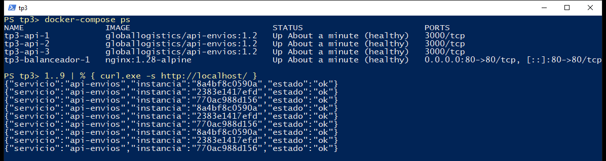
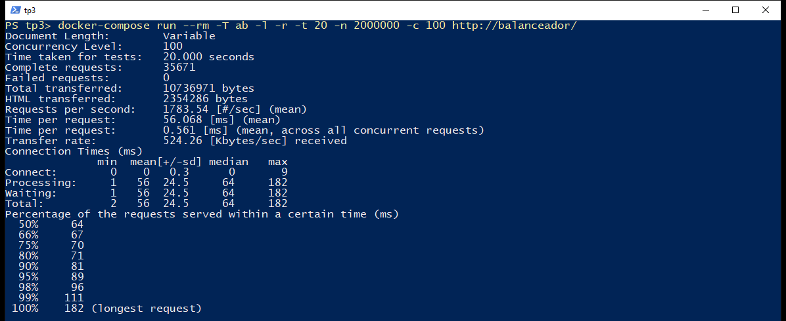
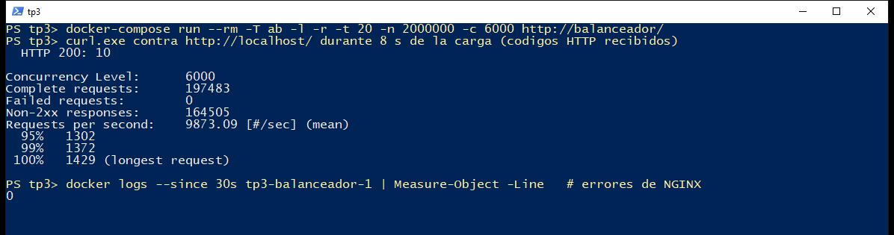

Desplegamos un balanceador NGINX y tres réplicas de un microservicio con un solo archivo de Docker Compose, y lo sometimos a pruebas de carga con Apache Benchmark. Como vara usamos los objetivos del contrato que definimos en el TP2: p95 ≤ 300 ms, p99 ≤ 800 ms y un máximo de 2000 ms.
Con 100 clientes simultáneos el sistema cumple sin problemas (p95 de 84 ms). La CPU de las réplicas se satura cerca de los 10 clientes, pero eso solo hace crecer la latencia de forma gradual. El objetivo de p95 se pierde entre 450 y 480 clientes y el de p99, entre 1000 y 1500. Por encima de los 1500 clientes, el control de admisión rechaza el exceso con 429: con 6000 clientes no falló ninguna petición y siguieron saliendo 1.629 respuestas correctas por segundo.
A ese resultado llegamos corrigiendo lo que rompían las pruebas. Las primeras configuraciones que medimos colapsaban: una de ellas fallaba en el 97 % de las peticiones con 1000 clientes. La causa no era la CPU, sino los límites de conexiones y un health check que retiraba réplicas sanas.
El archivo docker-compose.yml define todo el entorno y está completo en el Anexo. Un docker-compose up -d levanta exactamente un balanceador y tres réplicas: la cantidad sale de deploy.replicas: 3.
Las decisiones que tomamos en el manifiesto fueron estas:
depends_on: condition: service_healthy, así no recibe tráfico hasta que las réplicas responden.restart: unless-stopped, si el proceso de una réplica termina, Docker la vuelve a levantar.somaxconn, tcp_tw_reuse y nofile también quedan en el manifiesto, porque sin ellos los límites de la sección 4 no se pueden ampliar.ab no arranca con up -d, así que el entorno tiene solo los cuatro contenedores que pide la consigna.La API está hecha en Node.js con Express sobre node:22-alpine. GET / devuelve el hostname del sistema, que en Docker es el ID corto del contenedor.
Agregamos algo que no estaba pedido: GET / ejecuta 3000 iteraciones de PBKDF2, alrededor de 1,6 ms de CPU. Un endpoint que solo devuelve un JSON casi no consume procesador y queríamos saturar la CPU de verdad, que es lo que pide el escenario extremo. Elegimos un cálculo y no una espera porque una espera no ocupa CPU. El valor se cambia con la variable CPU_WORK_ITERATIONS.
La Figura 2 muestra la rotación: nueve peticiones seguidas al balanceador son respondidas por tres IDs distintos, siempre en el mismo orden.

El health_check activo de NGINX es exclusivo de la versión Plus, así que con la versión abierta los resolvimos en dos niveles:
max_fails=3 fail_timeout=10s. Tres fallos en 10 s sacan a una réplica de la rotación durante 10 s. Si falla la conexión, proxy_next_upstream reintenta la petición en otra.api/salud.js) vigila un latido del event loop. El healthcheck de Docker lo consulta cada 5 s, y como corre en su propio hilo, una réplica saturada sigue figurando como sana. Si el latido se detiene más de 10 s, el hilo termina el proceso y Docker la reinicia.Hace falta ese hilo porque en Compose una réplica marcada unhealthy no sale de la rotación ni se reinicia, y el mecanismo pasivo no distingue una réplica colgada de una ocupada. Queda un caso sin cubrir: una réplica congelada con SIGSTOP también congela su hilo de salud, y solo la detecta el mecanismo pasivo. El balanceador tiene además su propio health check, /nginx-health.
| Prueba | Resultado |
|---|---|
| Detener una réplica durante 10 s con 50 clientes activos | 42.760 peticiones, 0 fallidas; p99 de 102 ms y máximo de 178 ms. Al volver, recibe otra vez su parte del tráfico. |
| Terminar el proceso de una réplica | Docker la reinició sola; a los 13 s estaba otra vez sana. |
Escalar a 5 réplicas con --scale api=5 | NGINX las incorporó sin reiniciarse, gracias a resolve y al DNS interno de Docker. |
| Colgar el event loop de una réplica con 50 clientes activos | 40.137 peticiones, 0 fallidas y 50 respuestas 504 (0,12 %). El hilo de salud la reinició a los 10 s, sin intervención. |
Dos aclaraciones. docker stop es una detención ordenada; no probamos un corte de red ni un apagado abrupto del host. Y NGINX reintenta solo métodos idempotentes como GET: un POST /envios no se reintentaría, y ahí es donde entra en juego la Idempotency-Key que definimos en el TP2.
Respecto a escalar "sin intervención manual", el resultado es parcial. Las réplicas se recuperan solas, pero agregar capacidad sigue requiriendo un comando: Compose no tiene autoescalado. Para eso haría falta un orquestador, como Kubernetes con un HPA.
Cada medición dura 20 s y se repite 3 veces. Informamos el promedio de las tres, salvo la latencia máxima, donde dejamos el peor valor. Corrimos todo en una PC con un i7-9700 de 8 núcleos y 16 GB de RAM, con Docker Desktop sobre WSL2.
ab corre en un contenedor dentro de la red de Compose, para no medir también el reenvío de puertos de Windows. Como comparte la máquina con el sistema probado, controlamos que no fuera el cuello de botella: en el barrido hasta 1500 clientes y en las pruebas de escalabilidad, su CPU se mantuvo por debajo del 36 %. Desde 2000 clientes llega al 99 %, porque los 429 son instantáneos y lo obligan a reenviar sin pausa, así que el caudal de esas filas podría estar algo subestimado. Los comandos están en el README y los reportes crudos en resultados/crudo/.
| Métrica | Moderado c = 100 | Extremo c = 1000 | Sobrecarga c = 6000 | Objetivo (TP2) |
|---|---|---|---|---|
| Peticiones fallidas | 0 | 0 | 0 | – |
| Rechazadas con 429 | 0 % | 0 % | 84 % | – |
| Respuestas correctas por segundo | 1.849 | 1.842 | 1.629 | – |
| Latencia promedio | 54 ms | 535 ms | * | – |
| Percentil 95 | 84 ms | 600 ms | * | ≤ 300 ms |
| Percentil 99 | 97 ms | 635 ms | * | ≤ 800 ms |
| Latencia máxima | 146 ms | 680 ms | 1.605 ms | ≤ 2000 ms |
| CPU de cada réplica / de NGINX | 99 % / 34 % | 99 % / 35 % | 100 % / 65 % | – |
| Resultado frente al objetivo | Cumple | No cumple (solo p95) | Máximo: cumple |
* No se informa porque mezcla dos poblaciones: los 429 instantáneos y las respuestas que hicieron cola. El p50 de esa prueba da 451 ms y no refleja lo que espera una petición admitida. El máximo sí es válido.


curl enviados durante la carga recibieron 200: las peticiones admitidas se siguen atendiendo. En una muestra aparte con 3000 clientes contamos los códigos HTTP: 7468 respuestas 200 y 32.532 respuestas 429, sin ningún 5xx.Leer estos reportes tiene su trampa. ab cuenta los errores y los rechazos como peticiones completas, así que las req/s suben cuando el sistema rechaza o falla: los 9900 de la Figura 4 son en su gran mayoría 429. Además, su "Time per request" no se mide: es la concurrencia dividida por el throughput. Por eso reportamos las respuestas 2xx por segundo y la media de Connection Times.
Dos escenarios no alcanzan para ubicar dónde se degrada el sistema, así que medimos también los puntos intermedios.
| Clientes | 2xx/s | Fallidas | 429 | Media | p95 | p99 | Máx. | CPU réplica | CPU NGINX | Objetivo |
|---|---|---|---|---|---|---|---|---|---|---|
| 1 | 539 | 0 | 0 % | 2 | 2 | 3 | 37 | 31 | 15 | Cumple |
| 10 | 1.764 | 0 | 0 % | 6 | 11 | 15 | 41 | 98 | 36 | Cumple |
| 50 | 1.848 | 0 | 0 % | 27 | 45 | 54 | 95 | 99 | 34 | Cumple |
| 100 | 1.849 | 0 | 0 % | 54 | 84 | 97 | 146 | 99 | 34 | Cumple |
| 200 | 1.833 | 0 | 0 % | 109 | 137 | 155 | 210 | 99 | 34 | Cumple |
| 300 | 1.848 | 0 | 0 % | 161 | 190 | 207 | 248 | 99 | 34 | Cumple |
| 400 | 1.846 | 0 | 0 % | 215 | 257 | 278 | 326 | 99 | 35 | Cumple |
| 450 | 1.844 | 0 | 0 % | 242 | 285 | 305 | 334 | 99 | 34 | Cumple |
| 480 | 1.849 | 0 | 0 % | 258 | 319 | 340 | 368 | 99 | 34 | p95 excedido |
| 500 | 1.843 | 0 | 0 % | 269 | 334 | 359 | 402 | 99 | 35 | p95 excedido |
| 800 | 1.836 | 0 | 0 % | 431 | 490 | 515 | 561 | 99 | 35 | p95 excedido |
| 1.000 | 1.842 | 0 | 0 % | 535 | 600 | 635 | 680 | 99 | 35 | p95 excedido |
| 1.500 | 1.813 | 0 | 0 % | 809 | 943 | 1.008 | 1.198 | 99 | 35 | p95 y p99 excedidos |
| 2.000 | 1.728 | 0 | 82 % | * | * | * | 1.038 | 99 | 62 | Rechaza el exceso |
| 3.000 | 1.686 | 0 | 83 % | * | * | * | 1.217 | 100 | 65 | Rechaza el exceso |
| 4.000 | 1.675 | 0 | 83 % | * | * | * | 1.276 | 100 | 64 | Rechaza el exceso |
| 6.000 | 1.629 | 0 | 84 % | * | * | * | 1.605 | 100 | 65 | Rechaza el exceso |
Latencias en ms y CPU en % de un núcleo. * Mezcla respuestas admitidas con 429 instantáneos; no representa la espera de una petición admitida.
Además corrimos 120 s seguidos con 100 clientes, para descartar que algo se agote con el tiempo: 225.034 peticiones, 0 fallidas, máximo de 183 ms.
Encontramos cuatro umbrales. Ninguno provoca fallos, pero cada uno cambia lo que recibe el usuario:
| Clientes | Qué pasa | Evidencia |
|---|---|---|
| ≈ 10 | Se saturan las CPU de las réplicas | 98 % de CPU y 1.764 req/s. La latencia sube de 1,9 a 5,7 ms. |
| 450–480 | Se pierde el objetivo de p95 | p95 de 285 ms con 450 clientes y de 319 ms con 480. |
| 1000–1500 | Se pierde el objetivo de p99 | p99 de 635 ms con 1000 clientes y de 1.008 ms con 1500. |
| > 1500 | Entra el control de admisión | Con 2000 clientes, 82 % de 429. Siguen saliendo 1.728 respuestas correctas por segundo. |
Una vez saturada la CPU, el sistema no falla: las peticiones hacen cola. Por eso el caudal se queda cerca de las 1850 req/s y la latencia crece en proporción a los clientes, como predice la Ley de Little (R = N / X). Con 400 clientes predice 217 ms y medimos 215 ms; con 1000 clientes, 543 ms contra 535 ms.
Lo primero en saturarse fue siempre la CPU de los nodos, pero lo primero en romperse fue NGINX, al quedarse sin conexiones. La configuración actual es el resultado de ir encontrando y corrigiendo esos límites, uno detrás del otro:
worker_connections are not enough, y con 2000 salían apenas 38 respuestas correctas por segundo, con las réplicas ociosas. Lo ampliamos a 32.768.ListenOverflows pasó de 0 a 250 entre 1000 y 1500 clientes; las conexiones tardaban más de 1 s, NGINX lo contaba como fallo y retiraba réplicas. Lo ampliamos a 4096.tcp_tw_reuse.proxy_read_timeout, y esos timeouts retiraban réplicas sanas. Ahora limit_conn admite 1500 peticiones en curso, unos 0,8 s de espera en esta PC, y el resto recibe 429 al instante, como define el contrato del TP2.| Clientes | Previa, pool 1024 | Previa, pool 8192 | Configuración final |
|---|---|---|---|
| 500 | 441 (96 % error) | 1.736 (0 % error) | 1.843 (0 % error) |
| 1.000 | 321 (97 % error) | 1.781 (0 % error) | 1.842 (0 % error) |
| 2.000 | 38 (100 % error) | 345 (97 % error) | 1.728 (82 % con 429) |
| 6.000 | – | 134 (99 % error) | 1.629 (84 % con 429) |
Respuestas correctas por segundo y, entre paréntesis, el porcentaje de peticiones con error o rechazadas.
En nuestra primera configuración habíamos puesto keepalive 64 hacia las réplicas, una recomendación habitual para mejorar el rendimiento. La primera batería mostró algo absurdo: con 200 clientes el sistema "rendía" más de 7000 req/s, cuando su capacidad rondaba las 1800. Al mirar el detalle, más del 90 % de las respuestas eran 502 instantáneos y las réplicas estaban sin carga. Volvimos a medirlo con la configuración final y sigue pasando:
| Clientes | Configuración | 2xx/s | Respuestas de error | Máx. |
|---|---|---|---|---|
| 100 | Con keepalive | 1.949 | 0 % | 1.067 ms |
| 150 | Con keepalive | 1.549 | 48 % | 2.009 ms |
| 200 | Con keepalive | 563 | 89 % | 2.024 ms |
| 200 | Sin keepalive (final) | 1.833 | 0 % | 210 ms |
Algunas peticiones llegan a esperar más de 2 s y vencen proxy_read_timeout. Esos timeouts cuentan como fallos para max_fails, así que NGINX retira a las tres réplicas, sanas, y se queda sin destinos (no live upstreams). Sin keepalive, esas esperas no aparecen. Tampoco aparecían al ir directo a una réplica, sin NGINX. No llegamos a aislar el mecanismo exacto; nuestra hipótesis es que Node atiende primero las conexiones reutilizadas y demora las nuevas.
La enseñanza de fondo es que un mecanismo de resiliencia puede volverse la causa de la caída: el health check pasivo le quita capacidad al sistema justo cuando está más cargado. También hay un costo: con 100 clientes, el keepalive rinde un 5 % más, y sin él NGINX llega al 98 % de CPU con unas 7.300 req/s. Preferimos resignar ese caudal a cambio de estabilidad.
Casi, pero no del todo. Una réplica con 100 clientes da 688 req/s y p99 de 196 ms. Tres réplicas con el triple de clientes dan 1.848 req/s y p99 de 207 ms: la latencia se mantiene y el caudal se multiplica por 2,69, una eficiencia del 90 %.
| Réplicas | 2xx/s (c = 100 y 200) | Aceleración | Eficiencia | p95 con c = 100 | CPU NGINX con c = 100 |
|---|---|---|---|---|---|
| 1 | 692 | 1,00x | 100 % | 178 ms | 14 % |
| 2 | 1.326 | 1,92x | 96 % | 124 ms | 24 % |
| 3 | 1.841 | 2,66x | 89 % | 84 ms | 34 % |
| 4 | 2.229 | 3,22x | 80 % | 98 ms | 42 % |
| 5 | 2.613 | 3,77x | 75 % | 87 ms | 50 % |
La merma no se explica principalmente por el balanceador. Comparando una réplica directa contra la misma réplica detrás de NGINX, con 100 clientes, se pierde un 2,9 % de caudal (708 contra 688 req/s). Además, la CPU de NGINX crece en proporción al tráfico y no pasó del 52 % en estas pruebas. La eficiencia sigue cayendo al agregar réplicas, hasta 75 % con cinco, y lo atribuimos en parte a que todo comparte una misma máquina, aunque no pudimos aislarlo. A futuro sí habría un límite claro: con unas 529 req/s por réplica y un techo de 7.300, el único worker de NGINX se saturaría cerca de las 14 réplicas.
Tomamos como restricción de tiempo real el máximo de 2000 ms del contrato. Es tiempo real blando: pasarse degrada el servicio, pero no es una falla catastrófica. Con esa vara:
Es una cota práctica, no una garantía estricta. En la prueba del cuelgue, por ejemplo, las peticiones atrapadas en la réplica colgada llegaron a los 2001 ms, justo cuando vence el timeout. Las corridas individuales también varían: con 100 clientes, el p95 fue de 70 a 92 ms en las repeticiones de 20 s y de 131 ms en la de 120 s. Sigue dentro del objetivo, pero no identificamos la causa.
Hay una decisión que el negocio debería revisar: el límite de 1500 peticiones protege el máximo de 2000 ms, pero no el p95 de 300 ms. Según el barrido, cumplir el p95 pediría admitir unas 450, a costa de rechazar más. Además, con 6000 clientes se rechaza el 84 % del tráfico: el sistema sigue en pie, pero esos clientes tendrían que reintentar.
Para GlobalLogistics, este despliegue no alcanza tal como está. En el TP2 asumimos picos de 10.000 req/s y medimos unas 1850, con un endpoint que ni siquiera consulta una base de datos. Extrapolando, llegar a esa cifra pediría al menos 19 réplicas y 2 núcleos de NGINX, y es un piso optimista: la eficiencia venía cayendo y el servicio real haría trabajo de E/S que acá no existe. Además, hay un solo balanceador, que es un punto único de falla: la consigna lo pide así para esta prueba, pero contradice el requisito de alta disponibilidad 24/7.
Generador y sistema comparten máquina, ab no simula tiempos de espera entre peticiones de un usuario (por eso la CPU se satura con tan pocos clientes) y consulta un único endpoint. Los umbrales absolutos valen para este entorno: la misma configuración rindió unas 7900 req/s en una PC más rápida. Lo trasladable son el orden de los fallos y sus causas. Para producción proponemos:
La arquitectura cumple lo que pide la consigna: un balanceador y tres réplicas levantadas con IaC, reparto verificable, tolerancia a la caída o el cuelgue de una réplica sin peticiones fallidas y escalado horizontal con una eficiencia cercana al 90 % a tres réplicas. Bajo carga moderada cumple holgadamente los objetivos de latencia.
El sistema degrada sus tiempos de respuesta desde que se saturan las CPU, cerca de los 10 clientes, de forma gradual y predecible. Pierde el objetivo de p95 entre 450 y 480 clientes y el de p99 entre 1000 y 1500, y por encima de ese punto rechaza el exceso. La latencia máxima cumplió la restricción de tiempo real blando de 2000 ms en todo el barrido, aunque sin garantía estricta.
Este comportamiento se explica por la arquitectura desplegada: un proceso de Node por réplica, limitado a un núcleo, fija el caudal; las colas fijan la latencia; y el control de admisión fija cuánto puede crecer esa cola. Las pruebas también mostraron que la diferencia entre un sistema lento y uno caído no estuvo en la capacidad de cómputo, sino en cómo se configuraron los límites y los mecanismos de resiliencia.
El proyecto completo, con el README y los resultados crudos, está en el repositorio.
docker-compose.yml# Levanta exactamente 1 balanceador y 3 réplicas: docker-compose up -d
name: tp3
services:
api:
build: ./api
# 1.2: hilo de salud (1.1: backlog ampliado). Cambiar la versión obliga a reconstruir;
# con la misma, "up -d" reutilizaría una imagen vieja que haya quedado en la máquina.
image: globallogistics/api-envios:1.2
# El hilo de salud reinicia la réplica si se cuelga, y el kernel no deja que el
# PID 1 se mate a sí mismo: con init, Node deja de serlo.
init: true
environment:
PORT: "3000"
CPU_WORK_ITERATIONS: "${CPU_WORK_ITERATIONS:-3000}"
expose:
- "3000"
sysctls:
net.core.somaxconn: 4096 # techo del backlog de server.js
deploy:
replicas: 3
resources:
limits:
cpus: "1.0"
memory: 256M
restart: unless-stopped
# Consulta el hilo de salud (api/salud.js) y no la API: así no queda detrás de la cola
# de peticiones y no marca como caída a una réplica que solo está saturada.
healthcheck:
test: ["CMD", "wget", "-q", "--spider", "http://127.0.0.1:3001/health"]
interval: 5s
timeout: 3s
retries: 3
start_period: 5s
balanceador:
image: nginx:1.28-alpine
ports:
- "${LB_PORT:-80}:80"
volumes:
- ./nginx/nginx.conf:/etc/nginx/nginx.conf:ro
depends_on:
api:
condition: service_healthy
sysctls:
# Sin keepalive, NGINX abre una conexión por petición hacia las réplicas y cada una
# queda 60 s en TIME_WAIT. Con el valor por defecto (2: solo loopback), los 28.232
# puertos efímeros por réplica se agotaban tras ~45 s de carga sostenida a ~7700 req/s
# y NGINX retiraba a las tres réplicas sanas. Con 1, el kernel reutiliza un puerto en
# TIME_WAIT cuando es seguro hacerlo (usa los timestamps de TCP).
net.ipv4.tcp_tw_reuse: 1
net.core.somaxconn: 4096 # techo del backlog de "listen" en nginx.conf
ulimits:
nofile: 65536 # alcanza para los 32.768 worker_connections
deploy:
resources:
limits:
cpus: "1.0"
memory: 256M # con 20.000 clientes (el máximo de ab) NGINX usa ~165 MB
restart: unless-stopped
healthcheck:
test: ["CMD", "wget", "-q", "--spider", "http://127.0.0.1/nginx-health"]
interval: 5s
timeout: 3s
retries: 3
# Generador de carga. Por el perfil, "up -d" no lo levanta: se usa con "run".
# Corre dentro de la red de Compose para no medir también el reenvío de puertos de Windows.
ab:
image: httpd:2.4-alpine
profiles: ["loadtest"]
entrypoint: ["ab"]
nginx/nginx.conf# Un solo worker, porque el contenedor tiene una sola CPU. Cada petición ocupa dos
# conexiones, una con el cliente y otra con la réplica: con el pool por defecto (1024)
# el balanceador colapsaba cerca de los 480 clientes. Este alcanza para los 20.000
# clientes que admite ab como máximo; lo que limita la carga es el control de admisión.
worker_processes 1;
error_log /dev/stderr warn;
events {
worker_connections 32768;
multi_accept on; # acepta de a muchas cuando las conexiones llegan en ráfaga
}
http {
access_log off; # escribir un log por petición falsearía la medición
# DNS interno de Docker. Permite descubrir réplicas nuevas sin reiniciar NGINX.
resolver 127.0.0.11 valid=5s ipv6=off;
# Control de admisión: como mucho 1500 peticiones en curso hacia las réplicas. Con la
# cola acotada, aun en el hardware más lento que medimos (~1750 req/s) la espera queda
# cerca de 0,9 s, lejos de los 2 s del contrato, y no aparecen timeouts que el health
# check pasivo confundiría con réplicas caídas. El exceso recibe 429 al instante, como
# define el contrato del TP2, y no se registra como error porque es esperado.
# Si cambian CPU_WORK_ITERATIONS o las réplicas, recalcular: en curso = caudal × espera.
limit_conn_zone $server_port zone=en_curso:64k;
limit_conn_status 429;
limit_conn_log_level info;
upstream api_envios {
zone api_envios 64k;
# "api" es el nombre del servicio en Compose, nunca localhost: dentro de este
# contenedor, localhost es el propio NGINX. El DNS devuelve las tres réplicas.
# Health check pasivo: 3 fallos en 10 s sacan a la réplica de la rotación por 10 s.
# El activo lo hace cada réplica (api/salud.js): si su event loop se cuelga, la reinicia.
# max_conns funciona como compartimento estanco: una réplica colgada retiene como
# mucho la mitad de las peticiones en curso y las otras dos atienden el resto.
# Sin "keepalive" a propósito: con él aparecían esperas de más de 2 s que disparaban
# este mecanismo sobre las tres réplicas a la vez (ver informe y docker-compose.keepalive.yml).
# Sin keepalive cada petición abre una conexión nueva; los puertos que deja en
# TIME_WAIT los reutiliza el kernel gracias a net.ipv4.tcp_tw_reuse (docker-compose.yml).
server api:3000 resolve max_fails=3 fail_timeout=10s max_conns=750;
}
server {
listen 80 backlog=4096; # el valor por defecto (511) se desborda con miles de clientes
# Health check del propio balanceador
location = /nginx-health {
default_type text/plain;
return 200 "ok\n";
}
location / {
limit_conn en_curso 1500;
proxy_pass http://api_envios;
proxy_http_version 1.1;
proxy_set_header Connection "";
proxy_set_header Host $host;
proxy_set_header X-Forwarded-For $proxy_add_x_forwarded_for;
# Mismo límite que el contrato del TP2: a los 2000 ms se responde 504.
proxy_connect_timeout 1s;
proxy_send_timeout 2s;
proxy_read_timeout 2s;
# Si una réplica se cae, la petición se reintenta en otra y el cliente no se
# entera. No se reintenta por timeout: bajo saturación eso solo agregaría carga.
proxy_next_upstream error http_502 http_503;
proxy_next_upstream_tries 2;
add_header X-Upstream $upstream_addr always;
}
}
}
api/server.jsconst crypto = require('crypto');
const os = require('os');
const path = require('path');
const { Worker } = require('worker_threads');
const express = require('express');
const PORT = Number(process.env.PORT) || 3000;
// Trabajo de CPU por petición. Un endpoint que solo devuelve un JSON no satura nada:
// esto hace las veces de la validación y el cálculo que haría el servicio real.
// Usamos iteraciones fijas (y no "esperar N ms") para que el costo sea CPU de verdad
// y el límite de cpus del contenedor lo afecte. Con 0 se desactiva.
const CPU_WORK_ITERATIONS = Number(process.env.CPU_WORK_ITERATIONS) || 0;
const INSTANCIA = os.hostname(); // en Docker, el hostname es el ID corto del contenedor
// Cola de conexiones pendientes del kernel. Con el valor por defecto de Node (511) se
// desbordaba cerca de los 1000 clientes: el kernel descartaba conexiones y NGINX las daba
// por fallidas. No puede superar net.core.somaxconn, que fija docker-compose.yml.
const BACKLOG = 4096;
const app = express();
app.disable('x-powered-by');
app.get('/', (req, res) => {
if (CPU_WORK_ITERATIONS > 0) {
crypto.pbkdf2Sync('envio', 'globallogistics', CPU_WORK_ITERATIONS, 32, 'sha256');
}
res.json({ servicio: 'api-envios', instancia: INSTANCIA, estado: 'ok' });
});
// No hace trabajo de CPU a propósito. Se atiende en el mismo event loop, detrás de las
// peticiones en cola, así que bajo saturación tarda: por eso el healthcheck de Docker no
// usa esta ruta sino el hilo de salud (salud.js).
app.get('/health', (req, res) => {
res.json({ estado: 'ok', instancia: INSTANCIA, uptime: Math.round(process.uptime()) });
});
// Latido del event loop, compartido con el hilo de salud: mientras avanza, la réplica
// está viva aunque esté saturada; si se detiene, está colgada. Reloj monótono, para que
// un ajuste de hora no parezca un cuelgue.
const latido = new BigInt64Array(new SharedArrayBuffer(8));
const marcarLatido = () => Atomics.store(latido, 0, process.hrtime.bigint());
marcarLatido();
setInterval(marcarLatido, 250).unref();
const server = app.listen({ port: PORT, backlog: BACKLOG }, () => {
console.log(`api-envios escuchando en :${PORT} (instancia ${INSTANCIA})`);
new Worker(path.join(__dirname, 'salud.js'), { workerData: { latido } })
.on('error', (err) => { console.error('hilo de salud:', err); process.exit(1); });
});
// Solo importa con la variante docker-compose.keepalive.yml: tiene que superar el keepalive
// de NGINX para que Node no cierre conexiones que NGINX cree abiertas.
server.keepAliveTimeout = 75000;
server.headersTimeout = 76000;
// Apagado ordenado: termina lo que está en curso antes de salir.
process.on('SIGTERM', () => {
server.close(() => process.exit(0));
setTimeout(() => process.exit(0), 5000).unref();
});
api/salud.js// Health check de la réplica. Corre en un hilo aparte, con su propio event loop, para
// responder aunque el hilo principal esté saturado de CPU. Así distingue una réplica
// ocupada (el latido avanza) de una colgada (el latido se detuvo), algo que el health
// check pasivo de NGINX no puede hacer: para él las dos son timeouts.
const fs = require('fs');
const http = require('http');
const { workerData } = require('worker_threads');
const PUERTO = 3001; // solo lo consulta el healthcheck de Docker, desde el contenedor
const LIMITE_MS = 10000; // con la cola acotada por NGINX, el latido se atrasa ~1 s como mucho
const atrasoMs = () => Number(process.hrtime.bigint() - Atomics.load(workerData.latido, 0)) / 1e6;
http.createServer((req, res) => {
const ms = Math.round(atrasoMs());
res.writeHead(ms <= LIMITE_MS ? 200 : 503, { 'Content-Type': 'application/json' });
res.end(JSON.stringify({ estado: ms <= LIMITE_MS ? 'ok' : 'colgada', atraso_ms: ms }));
}).listen(PUERTO, '127.0.0.1');
// Una réplica colgada sigue aceptando conexiones a nivel de kernel, así que NGINX solo la
// detecta cuando fallan peticiones reales, y vuelve a probarla cada 10 s. Matarla la
// convierte en una caída común: Docker la reinicia y, mientras tanto, NGINX recibe
// "conexión rechazada" y reintenta en otra réplica sin que el cliente lo note.
// Requiere "init: true" en Compose: el kernel no deja que el PID 1 se mate a sí mismo.
setInterval(() => {
const ms = Math.round(atrasoMs());
if (ms > LIMITE_MS) {
// writeSync: la consola de un worker se escribe a través del hilo principal, que está trabado.
fs.writeSync(2, `event loop detenido hace ${ms} ms: se reinicia la réplica\n`);
process.kill(process.pid, 'SIGKILL');
}
}, 1000);
api/DockerfileFROM node:22-alpine WORKDIR /app COPY package*.json ./ RUN npm ci --omit=dev COPY server.js salud.js ./ USER node ENV NODE_ENV=production EXPOSE 3000 CMD ["node", "server.js"]